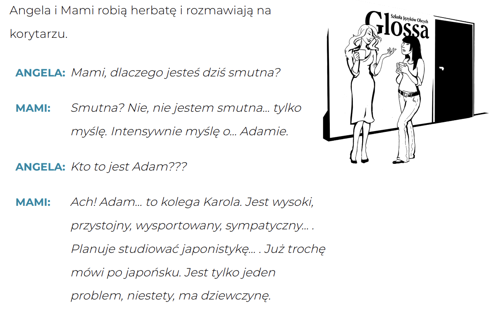
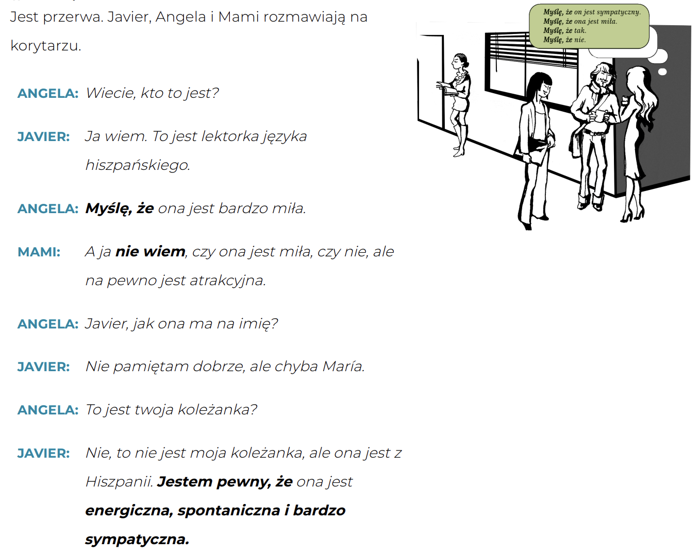

Krok Po Kroku 1
Temat 04 - Jaki jesteś?
słownistwo >>
A. Kto to jest? To nowy student.
Cieszę się. - Я рад.
Jak mówimy po polsku ,,hola"?
Как сказать hola по-польски?
masz rację - вы правы
mnie też - я тоже
moja nowa grupa - моя новая группа
mówimy po polsku - мы говорим по-польски
no dobrze - тогда всё в порядке
to świetnie - это здорово
to żart - это шутка
w grupie - в группе
🗣️ Как говорить о знании языков на польском
⚠️ Важно!
С глаголами znać, uczyć się, studiować НЕ говорим "język polski" как устойчивое выражение. Используем либо существительное с прилагательным, либо только прилагательное.
🧠 Формула:
p. Mówię + [степень] + po [язык (в местном падеже)]- 👉 Mówię dobrze po polsku.
- 👉 Mówię trochę po niemiecku.
B. Koniugacja -ę, -isz/-ysz
📚 KONIUGACJA –ę, -isz / -ysz
Эта конъюгация охватывает некоторые глаголы, которые в инфинитиве оканчиваются на:
- –eć
- –ić
- –yć
C. Jaki on jest?
Dialog 1

Почему ты сегодня грустишь?
jest tylko jeden problem
есть только одна проблема
kolega Karola - Друг Кароля
ma dziewczynę - есть девушка
myślę o - Я думаю о
trochę mówi po japońsku
немного говорит по-японски
tylko myślę - Я только думаю.
planuje studiować - планирует учиться
przystojny - красивый
robią herbatę - они заваривают чай
sympatyczny - симпатичный
wysoki - высокий
wysportowany - спортивный
Dialog 2

czy - ли
mila - миля
myślę - Я думаю
na korytarzu - в коридоре
na pewno - точно
nie wiem - Я не знаю.
przerwa - перерыв
twoja koleżanka - ваш коллега
ze - с
z/ze - из
że - что